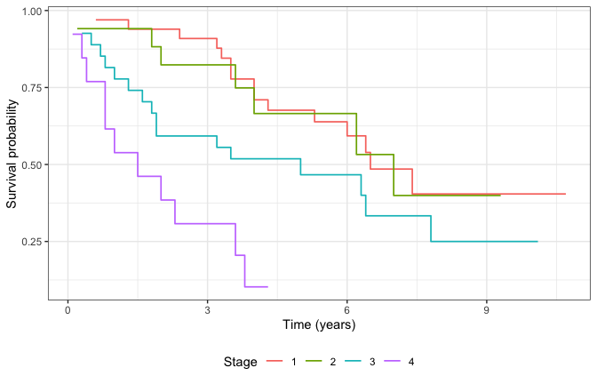
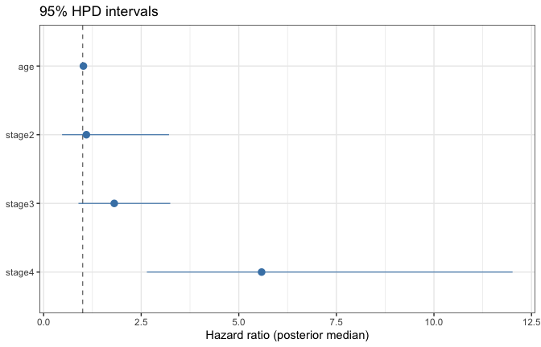
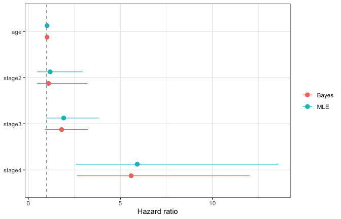

Bayesian fits use the same Stan likelihood as MLE
but sample from the posterior with rstan::sampling.
Before you model
Brief exploratory context for the larynx data (see Getting started for full EDA):
library(spsurv)
library(generics)
library(KMsurv)
library(survival)
library(ggplot2)
data(larynx)
larynx$stage <- factor(larynx$stage)
km_stage <- survfit(Surv(time, delta) ~ stage, data = larynx)
km_long <- data.frame(
time = km_stage$time,
surv = km_stage$surv,
stage = rep(levels(larynx$stage), km_stage$strata)
)
ggplot(km_long, aes(x = time, y = surv, color = stage)) +
geom_step(linewidth = 0.6) +
labs(x = "Time (years)", y = "Survival probability", color = "Stage") +
theme_bw() +
theme(legend.position = "bottom")
Kaplan-Meier by stage (unadjusted).
Fit and summarize
fit <- bpph(
Surv(time, delta) ~ age + stage,
degree = 5,
data = larynx,
approach = "bayes",
iter = 400,
warmup = 200,
chains = 1,
cores = 1,
init = 0,
priors = list(
beta = c("normal(0,4)"),
gamma = c("lognormal(0,4)")
)
)
#>
#> SAMPLING FOR MODEL 'spbp' NOW (CHAIN 1).
#> Chain 1:
#> Chain 1: Gradient evaluation took 5.9e-05 seconds
#> Chain 1: 1000 transitions using 10 leapfrog steps per transition would take 0.59 seconds.
#> Chain 1: Adjust your expectations accordingly!
#> Chain 1:
#> Chain 1:
#> Chain 1: Iteration: 1 / 400 [ 0%] (Warmup)
#> Chain 1: Iteration: 40 / 400 [ 10%] (Warmup)
#> Chain 1: Iteration: 80 / 400 [ 20%] (Warmup)
#> Chain 1: Iteration: 120 / 400 [ 30%] (Warmup)
#> Chain 1: Iteration: 160 / 400 [ 40%] (Warmup)
#> Chain 1: Iteration: 200 / 400 [ 50%] (Warmup)
#> Chain 1: Iteration: 201 / 400 [ 50%] (Sampling)
#> Chain 1: Iteration: 240 / 400 [ 60%] (Sampling)
#> Chain 1: Iteration: 280 / 400 [ 70%] (Sampling)
#> Chain 1: Iteration: 320 / 400 [ 80%] (Sampling)
#> Chain 1: Iteration: 360 / 400 [ 90%] (Sampling)
#> Chain 1: Iteration: 400 / 400 [100%] (Sampling)
#> Chain 1:
#> Chain 1: Elapsed Time: 0.158 seconds (Warm-up)
#> Chain 1: 0.177 seconds (Sampling)
#> Chain 1: 0.335 seconds (Total)
#> Chain 1:
summary(fit)
#> Call:
#> bpph(formula = Surv(time, delta) ~ age + stage, degree = 5, data = larynx,
#> approach = "bayes", iter = 400, warmup = 200, chains = 1,
#> cores = 1, init = 0, priors = list(beta = c("normal(0,4)"),
#> gamma = c("lognormal(0,4)")), model = "ph")
#>
#> Bayesian Bernstein PH model:
#> Regression coefficients:
#> Estimate 2.5% 97.5% Std. Error
#> age 0.0233 -0.0087 0.0480 0.0
#> stage2 0.1219 -0.7143 0.9710 0.5
#> stage3 0.6059 -0.3214 1.2143 0.4
#> stage4 1.6720 0.7426 2.5565 0.4
#>
#> Exponentiated coefficients:
#> Estimate 2.5% 97.5%
#> age 1.02 0.99 1.0
#> stage2 1.25 0.40 2.3
#> stage3 1.97 0.73 3.4
#> stage4 5.87 1.52 11.2
#>
#> ---
#> DIC = 296 WAIC = -149Visual check — posterior forest plot
td_b <- tidy(fit, conf.int = TRUE, exponentiate = TRUE)
hpd <- credint(fit, prob = 0.95, type = "HPD")
td_b$hpd.low <- exp(hpd[, 1])
td_b$hpd.high <- exp(hpd[, 2])
td_b$term <- factor(td_b$term, levels = rev(td_b$term))
ggplot(td_b, aes(x = estimate, y = term)) +
geom_vline(xintercept = 1, linetype = "dashed", color = "grey50") +
geom_pointrange(aes(xmin = hpd.low, xmax = hpd.high), linewidth = 0.4, color = "steelblue") +
labs(x = "Hazard ratio (posterior median)", y = NULL, title = "95% HPD intervals") +
theme_bw()
Posterior medians with 95% HPD intervals (exponentiated).
Visual check — MLE vs Bayes
td_m <- tidy(fit_mle, conf.int = TRUE, exponentiate = TRUE)
cmp <- merge(
td_m[, c("term", "estimate", "conf.low", "conf.high")],
td_b[, c("term", "estimate", "hpd.low", "hpd.high")],
by = "term",
suffixes = c("_mle", "_bayes")
)
cmp_long <- rbind(
data.frame(term = cmp$term, method = "MLE", low = cmp$conf.low, high = cmp$conf.high,
est = cmp$estimate_mle),
data.frame(term = cmp$term, method = "Bayes", low = cmp$hpd.low, high = cmp$hpd.high,
est = cmp$estimate_bayes)
)
cmp_long$term <- factor(cmp_long$term, levels = rev(unique(cmp$term)))
ggplot(cmp_long, aes(x = est, y = term, color = method)) +
geom_vline(xintercept = 1, linetype = "dashed", color = "grey50") +
geom_pointrange(aes(xmin = low, xmax = high), position = position_dodge(width = 0.5), linewidth = 0.4) +
labs(x = "Hazard ratio", y = NULL, color = NULL) +
theme_bw()
MLE 95% CI vs Bayesian 95% HPD (exponentiated).
Credible intervals and criteria
credint(fit, prob = 0.95, type = "HPD")
#> lower upper
#> age -0.008682201 0.04795021
#> stage2 -0.714296360 0.97097272
#> stage3 -0.321423136 1.21432591
#> stage4 0.742574440 2.55648825
#> attr(,"Probability")
#> [1] 0.95Convergence (optional deep dive)
Install bayesplot for trace and pairs plots:
Always inspect divergences, split R-hat, and ESS before interpreting results.
tidybayes posterior draws
Install posterior and tidybayes for
long-format draws and interval plots. After
library(spsurv), spread_draws() and
tidy_draws() dispatch on Bayes fits when
tidybayes is loaded.
library(tidybayes)
dr <- as_draws_df.spbp(fit)
spread_draws(fit, `beta[age]`)
#> # A tibble: 200 × 4
#> .chain .iteration .draw `beta[age]`
#> <int> <int> <int> <dbl>
#> 1 1 1 1 0.0536
#> 2 1 2 2 0.00867
#> 3 1 3 3 -0.00540
#> 4 1 4 4 0.0235
#> 5 1 5 5 -0.000776
#> 6 1 6 6 0.0117
#> 7 1 7 7 0.0568
#> 8 1 8 8 0.0333
#> 9 1 9 9 0.00501
#> 10 1 10 10 0.0436
#> # ℹ 190 more rowsDraw-level survival curves:
head(spread_surv_draws.spbp(fit, times = c(1, 2, 3), newdata = larynx[1, ]))
#> stage time age diagyr delta .chain .iteration .draw time surv id
#> 1 1 0.6 77 76 1 1 1 1 1 0.9280900 1
#> 1.1 1 0.6 77 76 1 1 1 1 2 0.8339741 1
#> 1.2 1 0.6 77 76 1 1 1 1 3 0.7102063 1
#> 1.3 1 0.6 77 76 1 1 2 2 1 0.9349245 1
#> 1.4 1 0.6 77 76 1 1 2 2 2 0.8823173 1
#> 1.5 1 0.6 77 76 1 1 2 2 3 0.8301550 1See vignette("tidymodels", package = "spsurv") for
workflows and parsnip engines.
Survival prediction
pr <- predict(fit, times = seq(0, max(larynx$time), length.out = 50))
head(pr)
#> id time surv lower upper cumhaz std.err
#> 1 1 0.0000000 1.0000000 1.0000000 1.0000000 0.00000000 0.000000000
#> 2 1 0.2183673 0.9736224 0.9565352 0.9890182 0.02677149 0.008688409
#> 3 1 0.4367347 0.9487925 0.9162128 0.9747140 0.05270225 0.015709899
#> 4 1 0.6551020 0.9252787 0.8786538 0.9576888 0.07792810 0.021389286
#> 5 1 0.8734694 0.9028798 0.8457123 0.9418049 0.10258228 0.025997823
#> 6 1 1.0918367 0.8814196 0.8190383 0.9309224 0.12679505 0.029759663See the Survival prediction and ggplot vignette for ribbon workflows.